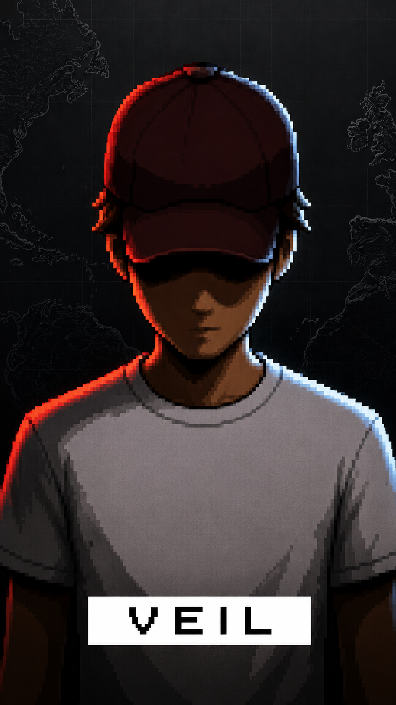

Le joueur arrive en helicoptere avec son equipe. Le but est de recuperer une mallette dans un coffre-fort. Elle contient les plans d'une arme experimentale.
DOSSIER 07-VEIL // CONFIDENTIEL
VEIL
Un jeu d'infiltration 2D ou chaque identite peut devenir une arme
EROR - PROJECT VEIL // TRACE LOST // IDENTITY STATUS: UNSTABLE

CREATEUR IDENTIFIE
Qui est Lotys ?
Lotys est un joueur passionne qui a toujours aime les jeux d'infiltration, les jeux narratifs et les univers mysterieux. Apres avoir passe beaucoup de temps a jouer, il a decide de creer son propre projet.
Son objectif est de construire un jeu original, accessible et rejouable, avec une vraie identite visuelle et un scenario rempli de revelations.
- Createur
- Lotys
- Genre prefere
- Infiltration
- Style du jeu
- 2D pixel art
- Moteur
- Godot
- Creation graphique
- Aseprite
- Statut
- En developpement
ARCHIVES NARRATIVES
Chronologie
Deux gardes surveillent l'entree. L'equipe neutralise l'un d'eux. Le joueur doit isoler le second, prendre son uniforme et entrer dans le batiment.
Le coffre-fort est protege par plusieurs gardes. Seuls les VIP peuvent entrer. Le joueur doit attirer un haut place dans les toilettes, neutraliser son garde du corps et lui voler son identite.
Grace au deguisement du VIP, les gardes ouvrent l'acces au coffre. Le joueur recupere la mallette.
L'alarme se declenche. Une course-poursuite commence. Le joueur prend une balle dans la jambe, mais reussit a s'echapper.
Plus tard, la UFSSA retrouve le joueur grace au traceur cache dans la balle. Elle lui impose de travailler pour elle.
Au fil des missions, le joueur decouvre que les dossiers de la UFSSA sont incomplets et parfois mensongers.
Le joueur commence a cacher de l'argent, blanchir ses fonds, obtenir de faux papiers et preparer sa disparition.
A la fin du jeu, le joueur s'enfuit du siege de la UFSSA pendant la nuit. La mission commence en infiltration vue de dessus et se termine en course-poursuite vue de cote.
EROR - PROJECT VEIL // ARCHIVE CORRUPTED // 09 FRAGMENTS FOUND
SYSTEMES DE JEU
Concepts
Infiltration
Observer les rondes, trouver les zones isolees, attirer les gardes, recuperer des uniformes, cacher les corps et eviter les temoins.
Deguisements
Le joueur peut prendre l'identite d'un garde, d'un employe, d'un technicien, d'un cuisinier ou d'un VIP. Chaque tenue donne acces a certaines zones.
Fuites
Certaines missions se terminent par une fuite en vue de cote. Le personnage avance rapidement et doit sauter, glisser, esquiver des obstacles et eviter les tirs.
Argent et blanchiment
Le joueur gagne de l'argent pendant les missions. Il doit le blanchir pour preparer sa fuite. Plus il blanchit vite, plus le risque de controle augmente.
Suspicion
La UFSSA surveille le joueur. Une jauge de suspicion peut augmenter selon ses choix. Si elle atteint un niveau eleve, l'agence peut saisir une partie de son argent.
Missions rejouables
Chaque mission propose plusieurs chemins, plusieurs deguisements, des evenements variables et plusieurs methodes pour atteindre l'objectif.
Score de mission
Le classement depend du nombre d'alertes, de temoins, de corps decouverts, du temps et de la discretion.
- Fantome
- Assassin silencieux
- Professionnel
- Nettoyeur
- Chaos
EROR - PROJECT VEIL // UNAUTHORIZED PROFILE CHANGE
DIRECTION ARTISTIQUE
Lisible, froide, selective
- Les civils sont entierement blancs et sans visage.
- Les personnages importants et les cibles ont une peau, des cheveux, un visage et des couleurs.
- Le heros a des yeux rouges discrets qui permettent de le reconnaitre.
- Les vetements changent selon les metiers et les deguisements.
- Les niveaux utilisent une perspective vue de dessus legerement inclinee.
- Les couleurs de la UFSSA sont sombres, froides et institutionnelles.
CODE VISUEL
Systeme de couleurs
Le blanc represente les civils, le jaune les personnages dont on peut usurper l'identite, le rouge les cibles, et le vert le heros. Ces couleurs servent a comprendre rapidement qui est neutre, utile, dangereux ou controle par le joueur.
AGENCE RESPONSABLE
United Federal Security Services Agency
Une agence gouvernementale secrete officiellement chargee de proteger les United Federal States. Elle controle les operations clandestines, les dossiers sensibles, les missions d'infiltration et les menaces internationales. Au fil du jeu, le joueur decouvre que l'agence manipule certaines informations et utilise ses agents comme des outils.
Armurerie
Salle de briefing
Archives
Salle des preuves
Salle informatique
Bureau du directeur
Laboratoire
Securite interne
EROR - PROJECT VEIL // DIRECTOR ACCESS DENIED
SUIVI INTERNE
Developpement
- Idee du jeu
- Creation de l'univers
- Creation de la UFSSA
- Premiere direction artistique
- Premiers tilesets
- Premiers personnages
- Prototype Godot
- Systeme d'infiltration
- Systeme de deguisements
- Premiere mission jouable
10%
PIECES JOINTES
Galerie
QUESTIONS OUVERTES
FAQ
Non. Le jeu sera en 2D pixel art avec une vue de dessus pour l'infiltration et une vue de cote pour les fuites.
Oui. Le joueur peut neutraliser certains PNJ dans des zones isolees et recuperer leur uniforme.
Oui. Le joueur pourra utiliser les deguisements, les distractions, les gadgets, les accidents ou la force.
Oui. Les routines, certains objets, les positions et certains evenements pourront varier.
Pour rendre les personnages importants immediatement reconnaissables et donner au jeu une identite visuelle forte.
Non. Il est encore en developpement.
EROR - PROJECT VEIL // ANSWERS PARTIALLY REDACTED
TRANSMISSION